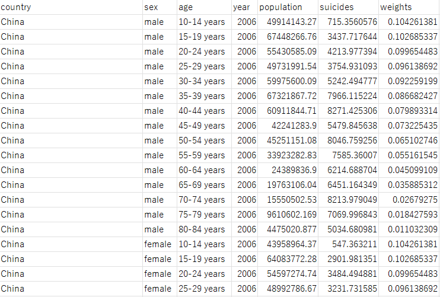
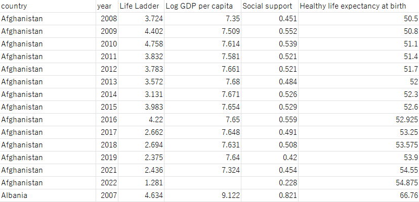
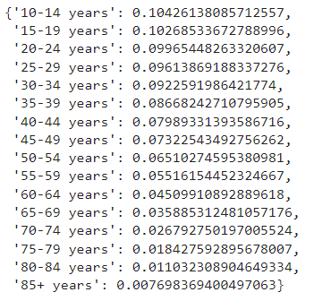
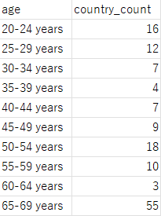

Statistics and Insights into Suicide Rates in the Modern Day
July 9, 2024
1. Project Overview
This exploration aims to investigate patterns and trends in suicide rates from 2006-2019 across the world, as well as their correlation to the measured happiness of a country. We also examine how these differ by age and sex within countries, as well as on a global scale. The goal is to further our understanding of suicides around the world in order to find out how different groups are affected and guide our search in finding better solutions.
All project files can be accessed here on GitHub.
1.1 Key Insights
- Suicide rates generally rise with age, but this can vary by country.
- Men generally experience higher rates than women.
- Suicide rates have generally been on a downward trend, having fallen by over 27% between 2006-2019. When looking at specific countries and age groups, however, this can vary.
- GDP per capita, and healthy life expectancy seem to play larger roles in affecting suicide rates for the elderly.
- The happiness of a country is not a predictor, but rather a factor in affecting suicide rates.
1.2 Tools
- Python: Data cleaning
- SQL Server (SSMS): Data querying/wrangling
- Tableau: Interactive visualizations
2. Introducing the Suicide Rates and Happiness Datasets
2.1 Suicides Dataset
A dataset of total suicides split by age groups and sex was acquired using IHME’s VizHub data tool with data from their Global Burden of Disease (GBD) study. A dataset of the corresponding populations split by the same criteria was also acquired from the same tool. These datasets were then cleaned and merged into one large dataset, and crude suicide rates per 100,000 population were calculated per each population, which is the standard for population measures.
The population and suicide counts are estimates based on upper and lower bounds provided by the dataset. For the sake of simplicity, those columns were dropped in the final merged dataset (see Section 4.2).
Age groups were split by 5-year gaps:
- 10-14 years
- 15-19 years
- 20-24 years
- ...
- 80-84 years
- 85+ years
Age groups were broken up as such to provide insight into suicide rates at specific developmental stages. The small age-ranges allow for greater granularity and more freedom in exploring the role of age in suicides. Data was unavailable for ages under 10. All suicide rates, crude and age-standardized in this report are per 100,000 population.
Ages 85+ were chosen as the ceiling because the populations of age groups 90+ were simply too small, leading to less reliability and precision.
Additionally, estimated suicide counts that were less than 1 were filtered out as well to reduce sta- tistical noise/outliers. Previously, somehow some countries had estimated suicide counts of less than 0.001, leading to extreme outliers in suicide rates. This may raise justified concerns regarding poor data quality, which are acknowledged; however, there are few datasets that are this comprehensive, so we will attempt to minimize this during the data cleaning process.
Below is a subset of the cleaned suicides dataset:
2.2 Happiness Index Dataset
The dataset for measuring happiness was taken from the World Happiness Report from 2023, a report by the United Nations that rates happiness per country through various measures. In short, we have:
- Cantril life ladder (Happiness score): Score from 0-10 of how good your life is at the current moment.
- Log GDP (PPP) per capita: A measure of average income and living standards per person, factoring in differences in the cost of living between countries. The logarithm is taken to facilitate easier comparison between countries.
- Social support: Binary response to whether or not you have friends or family to rely on. A higher score indicates better social support.
- Life expectancy at birth: How long (in years) a newborn is expected to live.
- Freedom to make life choices: Binary response to whether you have enough freedom in choosing how to live your life. A higher score indicates more freedom.
- Generosity: How much a country's actual behavior of donating money to charity deviates from what would be predicted based on its GDP per capita. A positive value indicates greater charity than expected, and vice versa.
- Perceptions of corruption: Binary response to whether government is perceived corrupt and whether businesses are perceived corrupt. A higher score indicates higher perception of corruption.
- Positive affect: The amount of laugh, enjoyment, and interesting things experienced, averaged.
- Negative affect: The amount of worry, sadness, and anger experienced, averaged.
A full appendix for a detailed explanation of each measure can be accessed here. The World Happiness Report assigns a value to each field by averaging nationwide responses to these questions. The dataset begins from 2005, and data is collected on a yearly basis. Unfortunately, the happiness dataset is not age-standardized, so we have to assume that some of the more subjective measures above apply to all ages.
Below is a subset of the cleaned happiness index dataset:
2.3 The use of crude versus age-standardized mortality rates
It is important to note that we are not calculating the crude death rates for each age group and sex split in the suicides dataset. As countries sometimes have vastly differing age distributions, comparing crude rates of countries as a whole leads to inaccuracies. Therefore, we circumvent this by calculating age-standardized mortality rates using the WHO’s World Standard Population (page 12). A detailed guide on how to calculate it can be found here.
The WHO World Standard Population provides a distribution for all ages, starting from age 0 to 100+. However, as our dataset only contains data for ages 10+, we must adjust and normalize the weights to conform to our needs. We can do this by:
- Combining the age groups in the World Standard Population distribution into the groups we are using by summing the weights (i.e. 95-100 years and 100+ years → 95+ years).
- Normalizing the resulting list of weights.
This gives us the following distribution:
3. Cleaning the datasets in Python (pandas)
3.1 Suicides Dataset Cleaning
The suicides and population datasets were cleaned and merged using the pandas library, and the cleaning process can be accessed here in a Jupyter notebook. The cleaned dataset can be accessed here.
3.2 A brief note on error
The original suicides and population datasets had columns for upper and lower bounds to compensate for error. However, the decision was made to remove these columns as the upper and lower bounds provided were asymmetric, complicating our ability to take advantage of these error values. Therefore, while we acknowledge the existence of error in the data, they will not be addressed in this study.
3.3 A brief note on missing values
The number of data values per year is inconsistent, due to missing values in the cleaning and merging stages of forming the dataset. All rows with missing suicide or population data were dropped as they provide no insight into the trends of suicide rates. Additionally, only countries found in both the suicides dataset and the happiness dataset were kept. A consequence of this is that data from 2005 especially is too sparse to accurately represent the behavior of suicide rates in that year, so they are also excluded from the final dataset.
3.4 Happiness Dataset Cleaning
Similarly, the happiness dataset was also cleaned and merged with pandas, and can be accessed here in a Jupyter notebook. The cleaned dataset can be accessed here.
4. Querying the datasets and extracting views (SQL Server)
The cleaned suicides and happiness index datasets were then merged and queried to gain some initial insight using SQL, for its ability to work easily with large datasets. SQL allowed us to wrangle the data and calculate suicide rates split by age, sex, and both simultaneously, by country. This resulted in the following four SQL queries, which split the population by different criteria and calculated the corresponding suicide rates:
- Suicide Rates by Country
- Suicide Rates by Country and Age
- Suicide Rates by Country and Sex
- Suicide Rates by Country, Age, and Sex
These queries were then put into views and exported to create our visualizations. This would allow us to look at how suicide rates vary from the country level down to how age and sex can affect it.
The SQL file can be accessed here, and the finalized datasets can be accessed here.
5. Key Questions
We seek to answer the following key questions:
- How do suicide rates differ across countries?
- How do age and sex affect suicide rates?
- How have suicide rates changed from 2006-2019?
- Do measures of happiness of a country affect their suicide rates, and to what extent?
6. Examining suicide rates within each year
In order to provide a preliminary perspective on suicide rates, let us begin by examining the distributions of suicide rates within each year. For more tangible insights, skip to the Notable Insights section further below. Immediately below are a collection of boxplots that showcase the distribution of suicide rates across countries, age groups, and sex. Data is available for 2006-2019.
*Note that the scale is different between the male and female charts above.
6.1 Country-Level
Suicide rates vary significantly across countries, even after accounting for age-standardization. In 2019, suicide rates ranged from 3.07 deaths per 100,000 in Kuwait to 52.71 deaths per 100,000 in Lesotho. While the median rate worldwide is around 10.99 deaths per 100,000, there are a number of outliers that experience significantly higher rates. This pattern is consistent across every year of data observed.
6.2 Age Group
Suicide rates generally increase with age. As age increases, so do the median and IQR, resulting in the distribution becoming wider as more and more countries begin experiencing higher suicide rates. Globally, the elderly are the most at risk of suicide, with increasing standard deviations also indicating a greater spread in suicide rates as they trend upward.
6.3 Sex-Based
Male and female suicide rates vary drastically in many countries, with males generally experiencing higher suicide rates then females. For males, the distribution of suicide rates exhibits characteristics such as significantly higher medians, wider interquartile ranges, and longer upper whiskers compared to females.
6.4 Notable Insights
6.4.1 Suicide rates vary by age, depending on the country
While suicide rates typically rise with age, these patterns can vary significantly from one country to another. For instance, in countries such as Finland, suicide rates peak between ages 45-59, but for the most part remain relatively even across most ages. Conversely, in countries such as Malaysia, suicide rates appear to increase with age, reaching their highest point at ages 85 and above. Furthermore, countries like Iran show higher rates among young adults compared to other age groups but peak later, around ages 85 and above.
In many countries, however, suicide rates peak as ages increase for both developed and less-developed countries. Consider the following distribution of peak suicide rates per country:
Suicide rates in elderly may be higher in less developed countries due to a lack of an adequate healthcare system or support for elderly individuals. On the other hand, social isolation for elderly in developed nations play a role as well due to common societal attitudes. Of course, there are also a number of countries that see their highest suicide rates in the middle aged and in young adults, such as Finland and Thailand. The reality is that these are most likely only a small part of the vast number of unseen factors that play a role.
6.4.2 Suicide rates are much lower for ages 10-14, even compared to ages 15-19
Suicide rates for ages 10-14 are substantially lower compared to any other age group (visible in Sections 7.2 and 7.4.1). Mean and median suicide rates were less than 1 death per 100,000 in 2019, with a standard deviation of 0.8.
Suicide rates for ages 10-14 were also notably lower than rates observed for the directly adjacent ages 15-19, which in many cases saw much higher rates comparatively. The above graph shows the relationship between suicide rates of age groups 10-14 and 15-19, by country and sex. Points above the line indicate that ages 15-19 in that country have a higher suicide rate than ages 10-14. Additionally, points further from the line indicate a larger difference between the corresponding suicide rates.
6.4.3 Men generally have higher suicide rates than women
On average, men experience higher suicide rates then women. The above graph shows the relationship between male and female suicide rates, split by country and age-group. The points that lie above the line indicate that for that particular country and age-group, men have a higher rate, and vice versa.
We can also observe gender disparity in suicide rates in the above chart. Points that lie closer to the line have similar rates for men and women, while points that lie farther indicate a greater disparity in male/female suicides.
Societal values and gender roles can be a factor in the gender disparity of suicide rates. Traditional gender roles are similar across the world, even in more developed countries (even if it is to a lesser extent), which would explain the gap in rates, although even that gap does vary greatly in size depending on the country and age group.
6.5 Additional Charts
6.5.1 Suicide Rates Across the World
6.5.2 Top N Suicide Rates, by Year
6.5.3 Top N Suicide Rates, by Country, Age, and Sex
7. A look at suicide rates over time (from 2006-2019)
Now, let us consider time as a factor from which to examine suicide rates. Suicides around the world have fluctuated with each passing year, with rates generally having decreased over the past decade. Below are a number of charts showcasing percentage and absolute-changes in suicide rates compared to rates in 2006, for each subsequent year. For example, a percentage change of -16.00% in 2017 means that suicide rates in 2017 were 16.00% lower than in 2006. The year of data shown is adjustable, and both percentage as well as absolute-changes in rates are visible in order to provide clarity on the scale of the data provided. These charts and boxplots are split by countries, age groups, and sex, with data available from 2006-2019.
A section below featuring notable insights is available for those who wish to skip ahead, if preferred.
7.1 Country-Level
By 2019, global suicide rates have fallen by over 27% since 2006, equating to around 4.5 deaths per 100,000 population worldwide. Rates have generally decreased with each passing year, although drops in suicide rates have been less pronounced in recent years.
On the country level, most countries have experienced a decline in suicide rates since 2006. The above boxplot shows the distribution of changes in suicide rates since 2006 by country, with red data points indicating an increase in suicide rates and blue data points indicating a decrease. Most countries throughout the years have shown a decrease in country-wide suicide rates, with a median percentage change in suicide rates of -11.83%.
It is important to reiterate that it is necessary to consider both the percentage and absolute-changes in suicide rates throughout this section. Percentage changes allow for an examination of a country's trends on its own scale, while absolute changes allow for a comparison between countries on the global scale. The chart above shows the fluctuations in rates by country, and allows for direct comparisons between them. Note that some countries may contain null values due to incomplete data.
Changes in suicide rates may differ greatly by country, however. Rates may rise, fall, or fluctuate between years depending on the country. For a visual example, consider the countries of Georgia, Ukraine, and Guatemala in the above chart.
7.2 Age Group
Below are global suicide rate changes, split across age groups. Again, these are viewable in either percentage or absolute change.
Rates per age group have experienced a general downward trend since 2006. The greatest decreases were observed in age groups 70+, with suicide rates in 2019 for ages 80-84 having fallen by over 43% since 2006.
Suicide rates worldwide for ages 10-14 have barely changed, however, fluctuating between 1-2 deaths per 100,000 population. Changes for other age groups have been more pronounced, with rates for ages 80-84 and 85+ having dropped by more than 21 deaths per 100,000 by 2019. In fact, decreases in suicide rates since 2006 are shown be higher as age groups get older.
For each age group, a majority of countries have experienced a decrease in suicide rates since 2006. In 2019, most age groups observed that at least 70% of countries had lower rates than in 2006, except for the age group 85 and above. Median values stayed consistently below 0, and for most age groups the third quartile is also below 0, indicating an overall noticeable decline in suicide rates for most ages across the world.
Rates may also vary greatly between countries and age groups. Countries such as South Korea have seen rates in most age groups rise in the late 2000s to early 2010s, and subsequently falling ever since. Germany, however, has seen patterns varying greatly between different age groups, with some experiencing an overall increase and others an overall decrease over the years.
7.3 Sex-Based
Suicides for men and women have mostly been on a downward trend since 2006. Global rates have fallen substantially for both sexes, although decreases in suicide rates seem to have slowed down in recent years.
Male rates have seen a slightly greater decrease in absolute changes, while female rates experienced greater percentage changes overall.
A majority of countries have experienced a decrease in suicide rates for both sexes since 2006. For men, more than 80% of countries had lower suicide rates in 2019 than in 2006. Women saw more than 85% of countries exhibit lower suicide rates in 2019 than in 2006. Compared to each other, more countries saw greater percentage decreases in female rates than male rates, a trend that persisted since 2006.
On a country-level, however, as seen repeatedly above, trends vary greatly. Countries such as Russia saw a greater percentage decline in male rates than female rates. On the other hand, France has experienced the opposite, with female rates falling faster. Meanwhile, rates in the United States have grown since 2006, peaking in 2016 with female rates growing proportionally faster than male rates.
As with the countries and age groups examined above, patterns and numbers can vary greatly by sex. The above charts are available to you for further exploration.
7.4 Notable Insights
7.4.1 Although global suicide rates have gone down, country-level patterns vary
While the majority of countries around the world have experienced a decline in suicide rates since 2006, there are a few that have seen the opposite. Above are two charts showing the percentage and absolute changes in suicide rates over 2006-2019, by country.
7.4.2 The percentage of countries with increased suicide rates since 2006 varies greatly by age group
In 2019, ages 85+ had the largest number of countries with increased suicide rates since 2006 out of all age groups, at around 35% of countries in the dataset. Ages 10-14 had the least, at around 9% of countries in the dataset. A greater proportion of countries have also seen rising rates in young adults (ages 20-40) compared to other age groups.
7.4.3 In some countries, suicide rates at different ages show similar overall trends
In countries such as South Korea and Taiwan, the percentage-changes in suicide rates over the years for most age groups share a similar contour. In other words, they generally rise and fall together. In other countries, such as the United Kingdom and Egypt, however, percentage-changes seem to differ greatly between different age groups, without any overarching trend. This phenomenon also occurs between male and female rates for certain countries.
7.5 Additional Charts
7.5.1 Change in Suicide Rates Across the World
8. Suicide rates and Happiness: A correlation?
8.1 A look at the happiness index
Now we would like to investigate whether there is a correlation between our suicide data and the perceived happiness of any given country. The Happiness Index dataset mentioned previously will be used as it has a number of measures that quantify happiness, development, quality of life, and other important aspects of a country.
First, let us take a brief look at each happiness measure. Below is the distribution of each available happiness measures, split between each available year.
8.2 Acceptable R-squared values in social sciences
Before we begin looking at suicide rates and happiness, however, we need to clearly establish what we are looking for with this investigation. As Peterson K. Ozili puts it in his paper on empirical modelling, our objective is not to predict human behaviour but rather to determine if our measures are significant to the trend of suicide rates (Ozili 1). Therefore, for this exploration we will state that a low R-squared value can be acceptable given that our p-values are significant.
8.3 Suicide Rates and Happiness
Below are a series of scatterplots of suicide rates against happiness measures, split by country, age, and gender. However, as seen in previous sections, age group and sex play a significant role in differing suicide rates around the world, and to different degrees depending on country. Therefore, we will primarily focus on suicide rates split by sex and age groups in order to see how each measure affects each split.
Note: The scatterplots can also be colored by a third happiness measure to look for correlations between two different happiness measures.
A linear trend line was fitted to the above plot. The following were the most interesting observations:
- When plotted against life ladder scores, R-squared values increased with age, with the greatest R-squared values (≈ 0.1 to 0.2) appearing between ages 65+ for both men and women. In other words, it is a possibility that as age increases, the overall happiness of a country plays a larger factor in lowering suicide rates.
- Similar patterns were observed when charting suicide rates against GDP per capita and healthy life expectancy. In fact, suicide rates seem most correlated to healthy life expectancy than any other measure for ages 65-74, with R-squared values of approximately 0.3. Logically, life expectancy and higher GDP per capita often corresponds to better provision of healthcare and longer periods of healthy living for the elderly, lowering associated risks of suicide.
- For both men and women, social support and suicide rates were positively correlated for younger ages, but negatively correlated for the elderly. Additionally, for women social support was not statistically significant for the younger population, and had weak correlation. Elderly women (65-85) saw the greatest correlation between social support and suicide rates, with R-squared values ∼0.1. Conversely, men saw the opposite, with weak correlation at later ages and the strongest for young adults (20-40). This outcome is very interesting, as it implies the following: For elderly women, the presence of friends and family to rely on generally has a greater effect on reducing the risk of suicide. However, for younger men, the presence of people to rely on generally increases the risk of suicide. Of course, with these relatively low R-squared values, this is only one of many factors at play, but it is still interesting nonetheless.
- For the most part, every other happiness measure seem to be significant for most age/gender groupings, although the magnitude of their effect may be much smaller.
The rest of the scatterplots can be seen below:
8.4 Distribution of suicide rates, by ’happy’ and ’unhappy’ countries
The above boxplots show the distribution of suicide rates for 'happy countries' and 'unhappy countries', respectively. For the sake of simplicity, the dataset was split into two at the median life ladder value. The distributions of suicide rates actually shows that for males under age 50, higher suicide rates are more common among 'happy' countries than among 'unhappy' countries. Median values, 25th and 75th percentiles, and even maximum values (outside of outliers) of suicide rates are greater in the 'happy' set. As age increases beyond that, however, the 'unhappy' set begins to experience a greater proportion of countries with higher suicide rates than the 'happy' set. Women also experience a similar phenomenon, albeit to a much smaller extent.
8.5 Notable Insights
8.5.1 Suicide Rate and Happiness Index trends over time, on a country-level, are unlikely to be highly correlated
The above graph plots suicide rates and a specified happiness measure for a specified country over time. Common trends and patterns between the two would imply the possibility of correlation. If both rise and fall together, this would imply that the two could be related.
Consider the above, which charts the suicide rates and life ladder scores of South Korean women, ages 30-34, from 2006-2019. The contours of both lines, however, do not seem to follow similar patterns, with suicide rates falling since 2009 while life ladder scores fluctuate greatly. For most countries and measures, the above is the case, however, with even suicide rates between different age groups and sex varying greatly.
However, it would also be erroneous to confidently say that our happiness measures play no role in affecting suicide rates. It is most likely that they each only play a small role in the larger picture, as is the case most of the time in the study of social sciences.
Note: The generosity field was normalized for this chart due to the dual axis, and negative numbers affecting its readability. Normalization allows us to scale the values from 0-1, with values representing how generous a country is relative to how generous it should be (according to the WHR), but we lose the information of whether it is more or less generous than it should be. Therefore, this field is normalized for the above chart only.
8.6 Additional Charts
9 Limitations
There are many limiting factors to this exploration, as brought up repeatedly above. Each measure plays a role of varying degree depending on age group and gender, not to mention the difficulty to quantify many variables not included in this study. For example, topics such as wealth disparity and easy access to means of suicide may be significant, but are also difficult to quantify.
There is also the problem that the responses to the Happiness Index measures were not age-separated, meaning that the correlation to suicide rates was based on the national average consensus. Of course, different age groups may respond very differently to their perception of their country. The World Happiness Report state that their sample size for each country is 1,000 people, which they state is a 'reasonably good estimate'. But is it a good representation of each age group?
However, that also does not mean that the results above are insignificant. Our goal was to find out what factors may simply be part of the equation, in order to provide starting points for how countries may seek to lower suicide rates. We also had to work within the limitations of our two main datasets. Hopefully, as more nations become more aware and educated on the many facets of mental health and suicides, we may gain access to better tools and more accurate data with which we may conduct more practical research.
10 References
Ozili, Peterson K, The Acceptable R-Square in Empirical Modelling for Social Science Research (June 5, 2022). Social Research Methodology and Publishing Results, Available at SSRN: https://ssrn.com/abstract=4128165 or http://dx.doi.org/10.2139/ssrn.4128165
 jamesinjune
jamesinjune